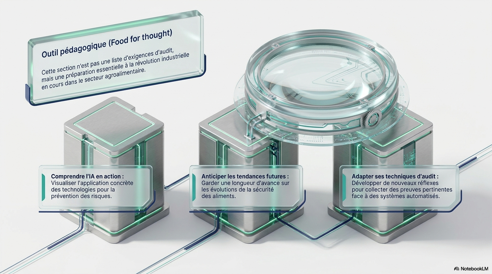
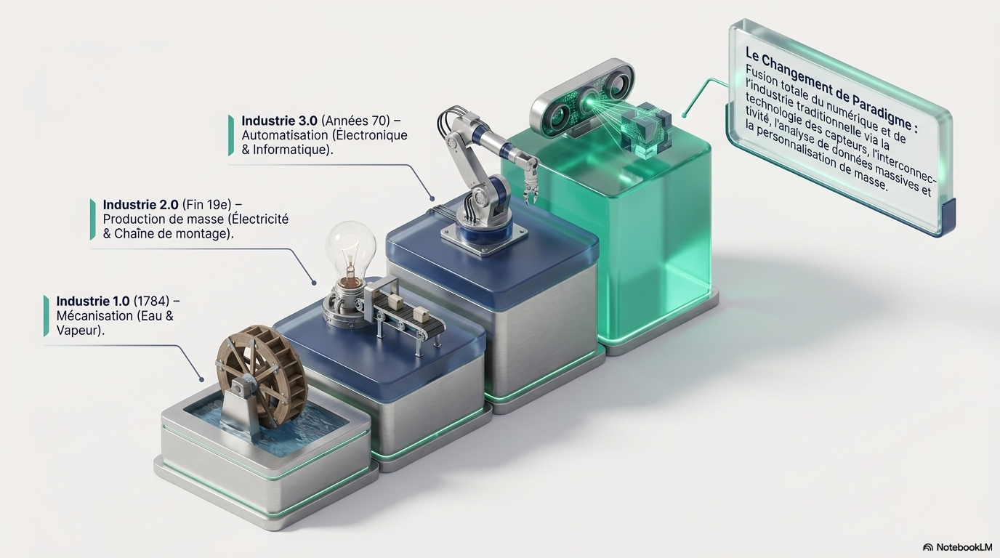
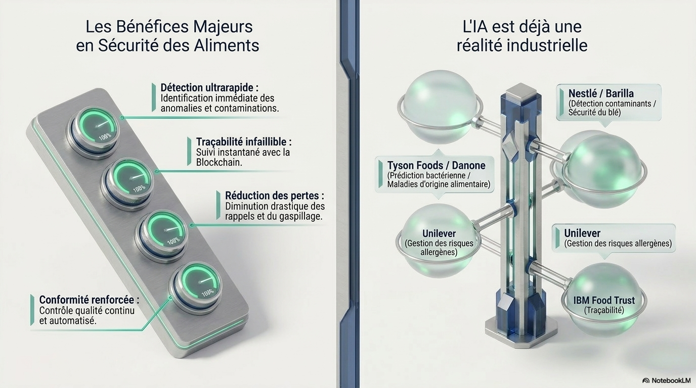

L'IA au service de la sécurité des aliments : un double usage — générative pour explorer et challenger, déterministe pour fiabiliser et pousser l'amélioration continueMake LLMs / generative AI and validated deterministic tools work together for food safety
Une approche en boucle continue : capter le terrain, structurer les donnees, analyser avec fiabilite, visualiser pour decider - et enrichir la base par chaque action posee. la présentation sur ta logique cible : collecte multi-source, bases de données structurées, analyses statistiques robustes, tableaux de bord interactifs, et une couche LLM pensée pour l’échange avec les utilisateurs, l’exploration et l’inventivité sans remplacer les moteurs fiables.This version recenters the presentation on your target logic: multi-source collection, structured databases, robust statistical analysis, interactive dashboards, and an LLM layer designed for user dialogue, exploration and inventiveness without replacing reliable engines.
3
Blocs principauxMain blocks
Collecte, base de données, décision visuelle et opérationnelle.Collection, data foundation, visual and operational decision support.
2
Couches IAAI layers
Une couche générative pour dialoguer, une couche déterministe pour fiabiliser.One generative layer for dialogue, one deterministic layer for reliability.
1
Architecture globaleGlobal architecture
Amélioration continue, analyses multi-supports, sources de données diversifiées et enrichissement permanent.Continuous improvement, multi-source analytics, diversified data sources and permanent enrichment.
Domaines d’applicationApplication areas
Trois domaines opérationnels couverts par l'architectureThree operational areas covered by the framework
L'architecture s’adapte à des contextes variés : pilotage de la production et de la qualité en temps réel, intelligence terrain et conformité réglementaire, et analyse prédictive à des fins de décision stratégique. Dans chaque cas, les couches déterministe et générative jouent des rôles distincts et complémentaires.The framework adapts to varied contexts: real-time production and quality management, field intelligence and regulatory compliance, and predictive analytics for strategic decision-making. In each case, the deterministic and generative layers play distinct and complementary roles.
⚙
Production & QualitéProduction & Quality
Pilotage qualité et contrôle de production en temps réelReal-time quality management and production control
Surveillance continue des paramètres critiques, détection d’anomalies avant dépassement de seuil, cartes de contrôle SPC et vision industrielle pour l’inspection automatisée.Continuous monitoring of critical parameters, anomaly detection before threshold breach, SPC control charts and industrial vision for automated inspection.
SPC / MSPIoT / CapteursVision AIXGBoostAlertes temps réelReal-time alerts
◎
Conformité & TraçabilitéCompliance & Traceability
Intelligence terrain et veille réglementaire automatiséeField intelligence and automated regulatory watch
Suivi des alertes RASFF, gestion des non-conformités et plans d’actions, scoring de risque fournisseur et traçabilité bout-en-bout des flux produits et logistiques.RASFF alert monitoring, non-conformity management and action plans, supplier risk scoring and end-to-end traceability of product and logistics flows.
Analyse prédictive et aide à la décision stratégiquePredictive analytics and strategic decision support
Séries temporelles, modèles prédictifs et scénarios prospectifs pour anticiper les dérives, optimiser les ressources et éclairer les décisions à moyen et long terme.Time series, predictive models and forward-looking scenarios to anticipate drifts, optimize resources and inform medium- and long-term decisions.
Deux IA, deux missions distinctes et complémentairesTwo complementary layers, two different roles
L’architecture distingue clairement la couche générative — pour explorer, questionner et contextualiser — de la couche déterministe — pour mesurer, calculer et prédire avec fiabilité. Cette frontière est le socle d’un usage pertinent et auditable de l’IA.The presentation explicitly separates what belongs to LLMs / generative models and what belongs to validated deterministic, statistical or industrial engines. This is the core point to avoid confusion between an “intelligent conversational tool” and a “reliable measurement, calculation or prediction system.”
Couche générativeGenerative layer
LLM / modèle génératif pour l’échange, l’exploration et l’inventivitéLLM / generative model for dialogue, exploration and inventiveness
LL
Le LLM n’est pas présenté comme moteur de vérité. Il sert à faciliter l’échange utilisateur, reformuler, challenger des hypothèses, proposer des interprétations, faire émerger des pistes d’action et rendre la base de connaissances navigable en langage naturel.The LLM is not presented as a source of truth. It is used to facilitate user dialogue, reformulate, challenge hypotheses, propose interpretations, generate action paths and make the knowledge base explorable in natural language.
Q&A conversationnel sur procédures, incidents, historiques et tendances.Conversational Q&A on procedures, incidents, history and trends.
Synthèses, reformulations, scénarios “et si”, et préparation de plans d’actions.Summaries, reformulations, “what if” scenarios and action-plan preparation.
Interaction bilingue ou multilingue avec les équipes et utilisateurs.Bilingual or multilingual interaction with teams and users.
Toujours adossé à des sources indexées, à une traçabilité et à des garde-fous.Always grounded in indexed sources, traceability and guardrails.
Couche déterministeDeterministic layer
Outils déterministes et modèles prédictifs fondés sur des règles robustesDeterministic tools and predictive models grounded in robust rules
DT
Cette couche porte les résultats fiables : seuils, contrôles, modèles validés, lois statistiques, corrélations référencées, vision industrielle, SPC, séries temporelles ou modèles de classification documentés. C’est là que se prennent les décisions calculées.This layer carries the reliable outputs: thresholds, controls, validated models, statistical laws, referenced correlations, industrial vision, SPC, time series or documented classification models. This is where calculated decisions are produced.
SPC, cartes de contrôle, détection d’anomalies et analyse multivariée.SPC, control charts, anomaly detection and multivariate analysis.
ARIMA, ETS, Prophet, XGBoost, Random Forest, régression logistique, modèles bayésiens.ARIMA, ETS, Prophet, XGBoost, Random Forest, logistic regression, Bayesian models.
Vision, capteurs, WGS, seuils physiques et contrôles temps réel.Vision, sensors, WGS, physical thresholds and real-time control.
Documentation des hypothèses, validation, recalibrage et auditabilité des résultats.Documented assumptions, validation, recalibration and auditability of results.
Architecture généraleGeneral architecture
Une logique en trois étages : collecte, base structurée, décisionA three-level logic: collection, structured foundation, decision
L'architecture est organisée pour reboucler en continu : on collecte, on structure, on analyse, on visualise, on décide, puis on enrichit à nouveau la base. Le système devient plus utile à mesure qu’il capte mieux le terrain et l’historique.The framework is organized as a continuous loop: collect, structure, analyze, visualize, decide, then enrich the foundation again. The system becomes more useful as it captures both field reality and historical data.
01
CollecteCollection
Collecter les données manuelles, automatiques et externesCollect manual, automated and external data
Le système doit capter des données saisies par des humains, des capteurs et caméras, et des flux internes ou externes comme des bases, newsletters, open data ou fournisseurs privés.The system must capture data entered by humans, by sensors and cameras, and from internal or external feeds such as databases, newsletters, open data or private providers.
Papier vers numérique via mobile, tablette, PC, OCR et formulaires guidés.Paper-to-digital through mobile, tablet, PC, OCR and guided forms.
Collecte quasi continue via sondes, caméras, balances, température, humidité, CO₂, pH, vibration.Near-continuous collection via probes, cameras, scales, temperature, humidity, CO₂, pH, vibration.
Veille automatisée via APIs, bases internes, newsletters, open data, sources réglementaires et bases privées.Automated watch through APIs, internal bases, newsletters, open data, regulatory sources and private data feeds.
MobileOCRIoTCVAPIs
02
Base structuréeStructured foundation
Construire des bases connectées, indexables et enrichissablesBuild connected, searchable and enrichable data foundations
Les données deviennent utiles lorsqu’elles sont nettoyées, normalisées, liées entre elles, historisées et recherchables. C’est la condition pour faire des analyses robustes et exploitables.Data becomes useful when it is cleaned, normalized, linked, historized and searchable. This is the condition for robust and actionable analysis.
Bases relationnelles, time series, document stores, graphes de connaissances et index de recherche.Relational databases, time-series stores, document stores, knowledge graphs and search indexes.
Filtres, tris, corrélations, tendances, croissance, saisonnalité, causalité prudente et scoring de risque.Filters, sorting, correlations, trends, growth, seasonality, cautious causality and risk scoring.
Enrichissement local, cloud, partagé, manuel ou automatisé selon les droits et les workflows.Local, cloud or shared enrichment, manual or automated depending on rights and workflows.
SQLTime seriesSearchKnowledge graph
03
DécisionDecision
Rendre les données lisibles, actionnables et challengeablesMake data readable, actionable and challengeable
L’interface finale doit rendre compréhensibles les informations utiles à la décision, tout en offrant une couche LLM capable de challenger les conclusions, proposer des alternatives et guider l’utilisateur.The final interface must make information understandable for decision-making while offering an LLM layer able to challenge conclusions, suggest alternatives and guide the user.
Dashboards dynamiques, horizon scanning, deep dive, vues globales et vues privées internes.Dynamic dashboards, horizon scanning, deep dive, overall views and private internal views.
Workflows interactifs pour suivi, plans d’actions, incidents, responsables et échéances.Interactive workflows for tracking, action plans, incidents, owners and deadlines.
LLM comme copilote de lecture et de challenge, pas comme arbitre final automatique.LLM as a reading and challenge copilot, not as the final automatic decision-maker.
DashboardsDatavizAlertsActions

Donnees et connectiviteData and connectivity
ArchitectureArchitecture
Schéma de fonctionnement général de l'architectureGeneral operating diagram of the framework
L'architecture s’organise en six couches distinctes et complémentaires. Chaque couche a un rôle précis, une frontière clairement définie, et s’inscrit dans une boucle continue : les décisions terrain enrichissent la base structurée, qui améliore les modèles, qui rendent le copilote plus pertinent.The framework is organized into six distinct and complementary layers. Each layer has a precise role and clearly defined boundaries, and participates in a continuous loop: field decisions enrich the structured foundation, which improves models, which makes the copilot more relevant.
01
Sources de donnéesData sources
Points d’entrée et originesEntry points and origins
Opérateurs & formulairesOperators & formsIoT / Capteurs / VisionERP · MES · LIMSRASFF · Open data · APIs
↺ Boucle de valeur — chaque décision, incident ou validation enrichit la base (couche 03), améliore les modèles (couche 04) et rend le copilote plus pertinent (couche 05)↺ Value loop — each decision, incident or validation enriches the foundation (layer 03), improves models (layer 04) and makes the copilot more relevant (layer 05)

Moteur analytique et IAAnalytics engine and AI
Positionnement du LLMLLM positioning
Le copilote LLM se situe au-dessus de la couche analytique (couche 04). Il lit les résultats fiables, les contextualise et les rend navigables en langage naturel. Il ne remplace jamais un seuil validé, une mesure capteur ou un modèle prédictif industrialisé.The LLM copilot sits above the analytics layer (layer 04). It reads reliable outputs, contextualizes them and makes them navigable in natural language. It never replaces a validated threshold, a sensor measurement or an industrialized predictive model.
Règle d’orGolden rule
Le génératif aide à penser, explorer et communiquer. Le déterministe aide à conclure, mesurer, classer, prédire et déclencher des actions fiables. Les deux couches sont complémentaires et non interchangeables.Generative AI helps think, explore and communicate. Deterministic systems help conclude, measure, classify, predict and trigger reliable actions. The two layers are complementary and non-interchangeable.
Boucle de valeurValue loop
Chaque décision, incident, correction ou validation enrichit la base structurée, améliore les analyses futures et rend le copilote conversationnel plus pertinent au fil du temps.Each decision, incident, correction or validation enriches the structured foundation, improves future analytics and makes the conversational copilot more relevant over time.
Frontières clairesClear boundaries
Chaque couche est documentée et isolée. Une erreur dans la couche analytique n’affecte pas la base de données. Le LLM ne réécrit pas les données — il les lit, les questionne et les traduit.Each layer is documented and isolated. An error in the analytics layer does not affect the data foundation. The LLM does not rewrite data — it reads, questions and translates it.
Décision & UXDecision & UX
Quels front ends et quels usages métiers montrerWhich front ends and business uses to present
Pour être crédible, l'architecture doit montrer non seulement les modèles, mais aussi les interfaces qui les rendent utiles : tableaux de bord, vues d’incidents, horizon scanning, plans d’actions et copilote LLM.To be credible, the framework must show not only models but also the interfaces that make them useful: dashboards, incident views, horizon scanning, action plans and an LLM copilot.
Dashboard exécutifExecutive dashboard
Vue synthèse des KPIs, alertes, tendances, dérives, risques montants.Summary view of KPIs, alerts, trends, drifts and rising risks.
Séparation claire entre données générales partagées et données privées internes.Clear separation between shared general data and private internal data.
Horizon scanning pour signaux faibles, veille réglementaire et signaux fournisseurs.Horizon scanning for weak signals, regulatory watch and supplier signals.
Vision globaleGlobal view92%
Drill-downDrill-down84%
Vue opérationnelleOperational view
Suivi des plans d’actions, responsables, échéances, statuts, preuves et commentaires.Tracking of action plans, owners, deadlines, statuses, evidence and comments.
Historique d’incidents, non-conformités, causes racines et mesures correctives.History of incidents, deviations, root causes and corrective actions.
Interaction continue avec la couche collecte pour reboucler et enrichir la donnée.Continuous interaction with the collection layer to loop back and enrich data.
Suivi d’actionsAction tracking88%
TraçabilitéTraceability95%
Copilote conversationnelConversational copilot
Permet de questionner les données, challenger une conclusion, demander une autre lecture.Allows users to query data, challenge a conclusion and ask for an alternative reading.
Doit citer ses sources internes, ses filtres utilisés et les limites de son interprétation.Must cite internal sources, filters used and the limits of its interpretation.
Ne remplace pas la décision métier ni la règle statistique documentée.Does not replace business judgment or a documented statistical rule.
ExplicabilitéExplainability91%
Challenge des hypothèsesHypothesis challenge79%
Briques fondamentalesCore building blocks
Les six briques fondamentales de l’architectureThe six core building blocks of the architecture
Chaque brique a un périmètre précis, une logique de fiabilité définie et une place identifiée dans la chaîne de valeur. Le recto présente la brique et ses capacités clés. Le verso expose son rôle métier, ses conditions de fiabilité et ses articulations avec les autres couches.Each building block has a precise scope, a defined reliability logic and an identified place in the value chain. The front presents the block and its key capabilities. The back exposes its business role, reliability conditions and connections to other layers.
CollecteCollection
Apps terrain et digitalisation du papierField apps and paper digitization
Interface opérateur pour transformer le papier en données exploitables via mobile, tablette, poste fixe et OCR.Operator interface to transform paper into usable data through mobile, tablet, desktop and OCR.
01Point d’entréeEntry point
Ce qu’il faut montrerWhat to show
Formulaires guidés, validation des champs, horodatage, signatures et preuves.Guided forms, field validation, timestamps, signatures and evidence.
OCR assisté + revue humaine avant intégration définitive.Assisted OCR + human review before final ingestion.
Mode offline / resynchronisation selon les environnements terrain.Offline mode / resynchronization depending on field conditions.
AutomatiqueAutomated
Capteurs, caméras et sondes multi-paramètresSensors, cameras and multi-parameter probes
Collecte continue ou quasi continue pour surveillance environnementale, process et contrôle visuel.Continuous or near-continuous collection for environmental, process and visual monitoring.
24/7SurveillanceMonitoring
Logique de fiabilitéReliability logic
Seuils documentés, calibration, fréquence d’acquisition et qualité signal.Documented thresholds, calibration, acquisition frequency and signal quality.
Vision industrielle couplée à des règles explicites et à des métriques de performance.Industrial vision coupled with explicit rules and performance metrics.
Événements, alertes et historiques réinjectés dans la base structurée.Events, alerts and history reinjected into the structured foundation.
Sources externesExternal sources
Veille automatisée et intégrations dataAutomated watch and data integrations
Connexion à des bases internes, newsletters, open data, bases privées et sources réglementaires.Connection to internal databases, newsletters, open data, private bases and regulatory sources.
APIConnecteursConnectors
Points d’attentionWatch points
Normalisation des taxonomies, mapping des entités et déduplication.Taxonomy normalization, entity mapping and deduplication.
Différenciation sources publiques, internes, contractuelles et sensibles.Differentiate public, internal, contractual and sensitive sources.
Versionnage, provenance et fréquence de mise à jour.Versioning, provenance and refresh frequency.
Analyse fiableReliable analytics
Moteurs statistiques et prédictifs documentésDocumented statistical and predictive engines
Utiliser les bonnes méthodes selon le cas : séries temporelles, classification, scoring, détection d’anomalies, surveillance de dérive.Use the right methods for the right case: time series, classification, scoring, anomaly detection, drift monitoring.
ARIMA+MéthodesMethods
Exemples à citerExamples to cite
ARIMA / ETS / Prophet pour la prévision temporelle et saisonnière.ARIMA / ETS / Prophet for time and seasonal forecasting.
Random Forest, XGBoost, régression logistique pour scoring et classification.Random Forest, XGBoost, logistic regression for scoring and classification.
SPC, cartes de contrôle, z-score, EWMA, CUSUM pour monitoring robuste.SPC, control charts, z-score, EWMA, CUSUM for robust monitoring.
Copilote LLMLLM copilot
Échange utilisateur et lecture intelligente des donnéesUser dialogue and intelligent reading of data
Le LLM sert à questionner, résumer, challenger et proposer, en gardant visible ce qui vient des sources et ce qui relève de l’interprétation.The LLM is used to question, summarize, challenge and suggest, while keeping visible what comes from sources and what comes from interpretation.
RAGAncrageGrounding
Usages pertinentsRelevant uses
Questionner une tendance, demander des explications, rechercher un précédent similaire.Question a trend, ask for explanations, search for a similar precedent.
Préparer une note d’aide à la décision ou plusieurs scénarios d’action.Prepare a decision brief or several action scenarios.
Rester sous garde-fous : citations, filtres, droits, logs et validation humaine.Remain under guardrails: citations, filters, permissions, logs and human validation.
PilotageExecution
Plans d’actions, workflows et rebouclage métierAction plans, workflows and business feedback loop
La valeur vient de la capacité à passer des données à l’action puis à réinjecter les décisions et résultats dans la base.The value comes from the ability to move from data to action and then feed decisions and results back into the foundation.
LoopAméliorationImprovement
Cartes de contrôle, UCL/LCL.Control charts, UCL/LCL.
Détection avant seuil.Anomaly before threshold.
ConclusionConclusion
Une architecture conçue pour durer, évoluer et rester auditableA framework built to last, scale and remain fully auditable
L'architecture proposée repose sur quatre principes non négociables : la séparation des responsabilités entre couches, la traçabilité totale des décisions, la capitalisation progressive par les données terrain, et la complémentarité stricte entre IA générative et moteurs déterministes.The proposed architecture rests on four non-negotiable principles: separation of responsibilities between layers, full traceability of decisions, progressive capitalization through field data, and strict complementarity between generative AI and deterministic engines.
I
Architecture modulaire et résilienteModular and resilient architecture
Chaque couche est indépendante.Each layer is independent.
Le LLM peut être remplacé sans affecter les moteurs.LLM can be replaced without affecting engines.
II
Traçabilité et auditabilité totalesFull traceability and auditability
Chaque résultat est horodaté et documenté.Every result is timestamped and documented.
Décisions traçables de la collecte à l'action.Traceable decisions from collection to action.
III
Capitalisation progressive par les donnéesProgressive capitalization through data
Le système s'améliore à chaque cycle.System improves with every cycle.
Valeur cumulative et proportionnelle à l'historique.Value cumulative and proportional to history.
IV
Gouvernance claire des deux couches IAClear governance of both AI layers
Le déterministe conclude, le génératif questionne.Deterministic concludes, generative questions.
Frontière documentée et non négociable.Documented and non-negotiable boundary.

Benefits et ROIBenefits and ROI
LexiqueGlossary
Glossaire des termes et conceptsTerms and concepts glossary
LLM
Large Language Model
Modèle de langage grande échelle pour dialogue et exploration.
GPT, Claude, Gemini
Copilote conversationnel
RAG pour ancrage
SPC/MSP
Statistical Process Control
Maîtrise Statistique des Processus — surveillance qualité temps réel.
Cartes de contrôle, UCL/LCL
Détection avant seuil
EWMA, CUSUM
IoT
Internet of Things
Réseau d'objets connectés — capteurs et dispositifs.
Température, humidité, CO₂, pH
Collecte quasi continue
Capteurs, caméras
RAG
Retrieval Augmented Gen.
Génération augmentée par récupération — ancrage sur sources.
Citations, traçabilité
Limites d'usage
Sources indexées
RASFF
Rapid Alert System
Système d'alerte rapide UE pour sécurité alimentaire.
Veille automatisée
Notifications
Alertes en temps réel
ARIMA
AutoRegr. Integ. Mov. Avg.
Modèles de séries temporelles pour prévision.
Prévision temporelle
Saisonnalité
ETS, Prophet
XGBoost
eXtreme Gradient Boosting
Algorithme de classification et scoring par arbres.
Risque fournisseur
Classification
Random Forest
OCR
Optical Char. Recognition
Reconnaissance de caractères — papier vers numérique.
Formulaires scannés
Revue humaine
Validation
Vision AI
Vision industrielle
IA pour inspection visuelle automatisée.
Détection défauts
Contrôle conformité
Caméras, règles
Bayésien
Modèle bayésien
Approche probabiliste pour inférence et prédiction.
Incertitude quantifiée
Mise à jour itérative
Estimation postérieure
ERP
Enterprise Resource Planning
Système de gestion intégré des ressources.
Production, stocks
Finances
Intégration données
MES
Manufacturing Exec. System
Système de pilotage de la production.
Ordonnancement
Traçabilité
Temps réel
LIMS
Lab Information MS
Gestion des données laboratoire.
Résultats analytiques
Échantillons
Normes ISO
API
Application Programming I.
Interface de programmation pour échanges de données.
Connexion systèmes
Automatisation
Web services
KG
Knowledge Graph
Graphe de connaissances pour relations entre entités.